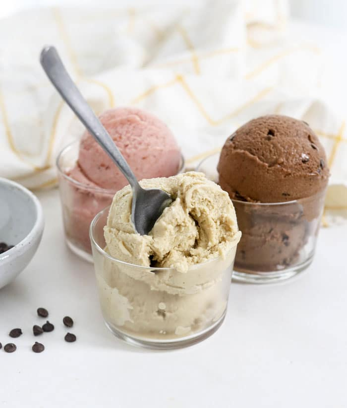

Nice Cream

Description
Nice cream is a great replacement for traditional ice cream because
it's much healthier and easy to make with just a few ingredients. You can make banana nice cream with
just bananas, chocolate nice cream by adding a little coacoa powder, or you can really experiment
and try many different combinations to find your new favorite frozen treat.
Ingredients
- Frozen banana slices
- Mix-ins such as peanbut butter, chocolate, or other fruit.
Steps
- Freeze your bananas before making nice cream. It's best to cut them up into small slices and then freeze them over night or longer.
- Add your banana slices to a blender or nice cream machine and beat until smooth and creamy.
- Add in your additional flavors or toppings and mix until well blended.
- Enjoy! You can even save any left overs in the freezer for later.
Back to Index